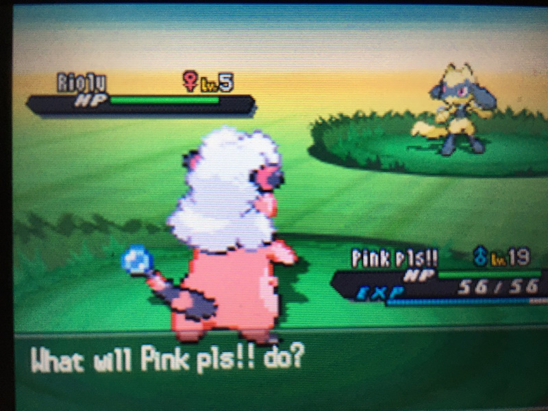
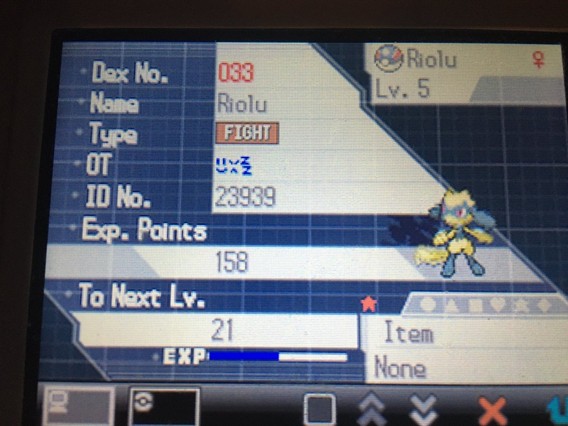

A story of how I had to alter my legit Pokemon to be able to use it in Scarlet and Violet's online Tera Raids A story of how I had to alter my legit Pokemon to be able to use it in Scarlet and Violet's online Tera Raids
A story of how I had to alter my legit Pokemon to be able to use it in Scarlet and Violet's online Tera Raids A story of how I had to alter my legit Pokemon to be able to use it in Scarlet and Violet's online Tera Raids Now... during your time playing Scarlet and Violet, have you ever come across an error message when joining a Tera Raid that reads something along the lines of: "You cannot join this raid due to a problem with the Pokémon in your party" or maybe "There is a problem with the Pokémon you selected" ? This error message can mean an absolute myriad of things, from connection errors, to hack detection, to problems with a Pokemon's nickname. Emphasis there on the Pokemon's nickname... It's not that the nickname itself isn't allowed in the game, it just for some reason flags the game's filters when being used online. Weird, right? I thought so too. I came across this error message for the first time a day or so ago, when starting to actually mess with Tera Raids for the first time, and it sent me on a completely frustrating rabbit hole that I thankfully managed to solve, only due to my forward thinking.
So a bit of background information, and the scenario that ended up with me encountering this issue. I have a super rare and awesome shiny that I caught **legitimately** in 2020 in BW2 on a fairly new save - a shiny Riolu, female, and 1% with Static (hunting for Mareep in Floccessy Ranch).
 
The details there don't particularly matter yet, but will later... Recently, I decided that instead of letting an awesome shiny like that sit and rot in a game I'm not playing through, I'd transfer it up through Pokemon HOME and finally play through Scarlet to play the DLC. Keep in mind I'd never once used Pokemon HOME before this, because I usually prefer to keep shinies in their original games. This is the VERY FIRST TIME I'd ever transferred a Pokemon up, even since back when it came out. Because of this, and because of how early in the game I'd caught this shiny, I decided to back up my save using Checkpoint on my 3ds so that I could still sort of keep her in BW2 and try to do a Ribbon Master challenge in the future. This ended up being a complete lifesaver later, and is the only reason I'm able to use this Pokemon in Raids at all, but I'm getting a bit ahead of myself.
Cut to around halfway-ish through Scarlet - I've just beat Larry in Medali, and since I'd recently unlocked 3-4 star raids I'd decided to actually start tackling them and joining online ones. My Riolu's evolved into Lucario, I've nicknamed it "Floccessy" in honor of it's origin. When trying to join a Tera Raid online for the first time, I get the message "You cannot join this raid due to a problem with the Pokémon in your party." Huh, that's weird. On a quick google search, I see that it could be connection issues, or maybe a problem with your Pokemon's held item, or a couple other quick fixes. Restarting the game, my switch, and my wifi all don't work, so I start checking which individual 'mon it could be causing the problem - of course, it's the Lucario. Annoying. Well, surely it's not because it's transferred from HOME... maybe it's the held item or moves? Though I don't know why an Amulet Coin would be causing problems, or Dragon Pulse, Flash Cannon, Aura Sphere or Bone Rush. Whatever. I try removing all of them anyways, and no dice. I'd already changed her nickname, so I can't change it again due to her technically being traded - with SV only allowing 1 nickname change. Ugh.
Unless... I restore my save on BW2 using Checkpoint, try sending over another copy of the same Riolu, and see if it allows her in without the nickname. I was already thoroughly annoyed at this point, running into comment after comment saying "Your Pokemon is probably hacked, sorry!" - I know this isn't hacked, I caught it myself! There's no reason it should be illegal! The stupid irony of the entire situation is the main thing that fueled me trying to find the source of the problem, so I went ahead and did exactly as I said: restored my save, and sent over another copy of the exact same Riolu, unnicknamed. Guess what? Still no dice.
At this point I'm actually pretty mad; this was not only the first time I'd ever transferred a Pokemon up through HOME since it came out back in the day, but also my first ever time using a traded Pokemon on a main story team, and it's one that I have a LOT of sentimental attachment to. What the fuck could possibly be causing this error? I could find literally no one with this issue that didn't have it solved by something simple - at least some people understood that their 'mon was hacked since it was received over Wonder Trade or something else. But I caught this myself! Well, you know what - in the end, I did manage to figure out exactly what the issue was...
The issue? The BW2 file's OT name. I don't give a lot of my newer DS saves names that make sense due to lots of reasons, but this particular save was named a mix of emoji-like symbols from the DS's symbols list. At the time I thought it was just something cute and funny, but now it was ruining my whole Tera Raid experience! That was the culprit the whole time! I had ABSOLUTELY no idea why that was flagging it, because it's not like it didn't allow me to transfer the Pokemon in the first place? The OT showed as blank in ScarVi, but surely that wasn't an issue? Well, apparently, it was. In the end, in order to transfer in my COMPLETELY legit Pokemon, I had to HACK IT to change it's OT! After that, it lets her join Tera Raids just fine - after 3 SEPARATE ATTEMPTS at sending this SINGLE Pokemon over. Absolutely unbelievable. I'm extremely frustrated at having to alter the data of a Pokemon that I had waited years to find an excuse to use for something special to me. I'm extremely glad to use her in Raids now, don't get me wrong -- but like, at what cost? Could I have just stuck to using her in the story only? Yeah. But it's about the PRINCIPLE... Lucario's probably the strongest 'mon on my team, and I kept running into Raids I wish could have used her in and just being COMPLETELY locked out is so annoying... UGH!!! Whatever. It's all done and sorted now, hopefully for good. Most of all, I wanted to post this in order to hopefully help someone else having the same issue in the future. Thanks for reading my mega-lengthy post!
TL:DR: Be careful when transferring up Pokemon from DS titles that have "Symbols" in their name *OR THE OT'S NAME* - like the little "smilies" or stars, sleepy symbols, etc. that aren't in SV. These Pokemon will flag the error check when attempting to enter Raids online, and that stupid error message is extremely nondescript. If you have the option to change your Pokemon's nickname, change it - and if you don't have a way to change the OT name... sorry, you're probably out of luck.